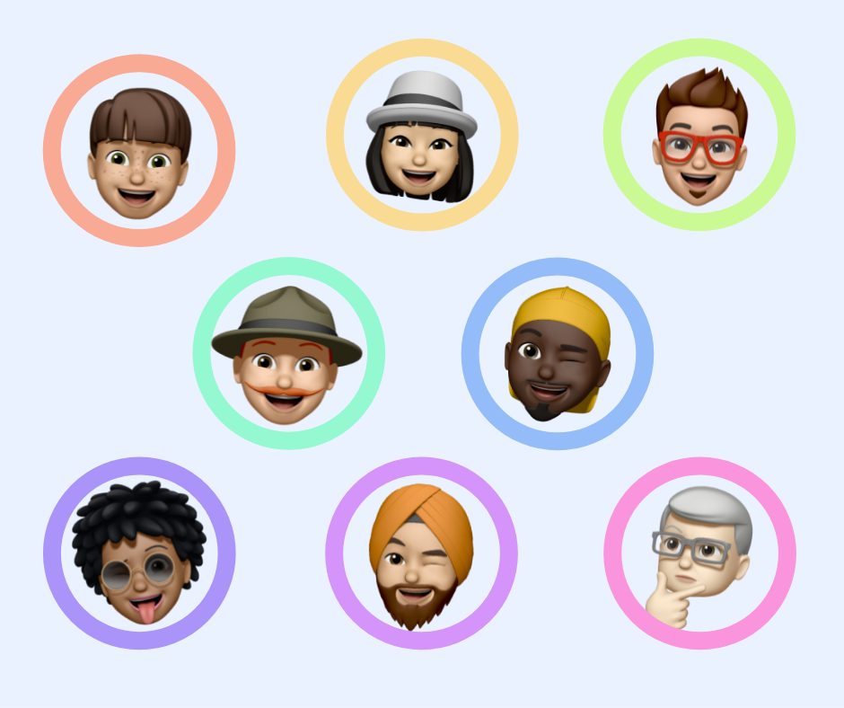

I enjoy the pursuit of craft, solving complex problems, and mentoring others.
I’m inquisitive by nature and love exploring this beautiful world. I also enjoy volunteering and meeting new people.
Outside of work I enjoy travel, hiking, photography, and longbow archery.

Locations
California, USA
Wellington, NZ
Superpower
High fidelity prototyping
Reading
Arctic Circle
by Robert L Reid
Volunteering
Mission High School,
Community Gardening
Spirit animal
A curious river otter that designs